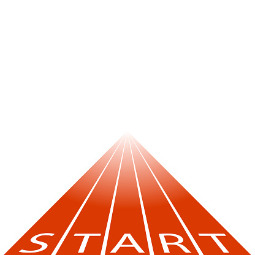
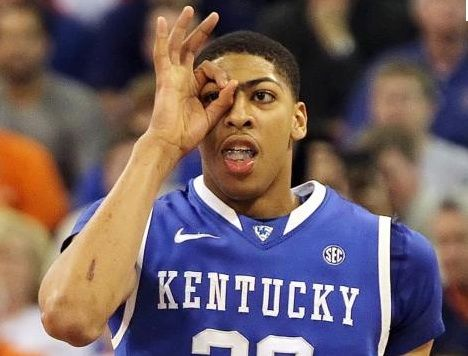
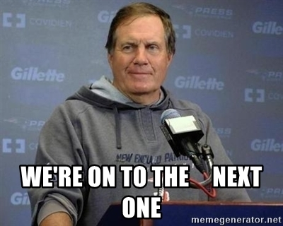

Week One
Week One has been similar to what I expected it would be to this point. I anticipated that this class would be a lot to take in, given I hadn't done any programming in 10 years coming into this, and it has certainly not disappointed in that regard. I am thankful that my time at my previous full-time position has already ended so that I am able to focus all of my attention onto the bootcamp.
Throughout the bootcamp, I am simply excited to learn, and to learn a lot. For the past 5 years, I have been doing something that doesn't fit my personality or my natural giftings. I look forward to diving into the world of programming and to hopefully unlock something inside of me that will grow, challenge, and excite me in all the right ways. Right now, the things that I want to learn most about are making aestheically pleasing UX's and design, animation, and data analysis. As I look forward in this field and things that bring me life, these are the topics that stand out the most at this time.
Something to know about me is that I have spent the past five years as an insurance agent, and the past number of years before that doing volunteer ministry outreach in an environment where most people didn't look like me. Both of those things are generally geared toward extroverts, of which I am not. I have learned so much through both about working with people, dealing with all different types of cultures and personalities, and pushing myself out of my comfort zone. I think those skills will benefit me greatly both in this bootcamp, and moving back into the real world in a new career where I will continue to work with teams and clients, just in (likely) a less forward-facing role. I look forward to working with my classmates and instructors throughout this process and watching us all learn and grow together.
As John Calipari always says:
I like my team.
Week Two

Week two of the bootcamp has been a really exciting week that has pushed me and challenged me in a lot of ways. Moving from markdown into HTML, CSS, and a little bit of JS has been a big jump, but it's cool to see the growth in myself and those around me as everything builds upon the last. While I'm learning a ton and taking in a lot of information right now, there's still so much I hope to learn and develop on as we move forward. I'm really interested in film animation and data science, and I know skills that deep won't be covered in the bootcamp, I'd like to maybe create a knowledge base to help me dive deeper into those skills. I want to at least learn some more HTML, CSS, and JS skills to create some basic animations. And while we may not learn Python and the like in this bootcamp, I hope to gain skills in creating functions and using logic and math to build out ways to solve data equations.
My biggest struggles right now are fine tuning my HTML skills and knowing what to focus on. I need to improve on my ability to simply
set up a webpage correctly in HTML and know the exact order/format of the elements and attributes to use. For instance, in this week's
Build exercise, I was struggling at one point when correcting the format of the HTML when inserting a section, and I ended up making
it an article before realizing that it was incorrect. Beyond that, it will be nice to have a larger knowledge base for coding so I
can try to find a niche that I want to pursue. Right now, it's a lot of gathering information where I have none, and I don't know what
I want to do with it, or what I should be focusing in on. I think that will improve throughout the course of this bootcamp, but it is
a bit overwhelming right now.
I enjoy solving problems, and I'm learning that programming never allows a lack of problems to be solved. I like to think I'm pretty good at utilizing my resources, and I'm thankful to have a plethora of those at my disposal right now. It's key to focus in on exactly what the root issue of a problem is; that way you're solving for the right thing, and not spraying perfume on a casket, so to speak. So far in this course, I have done a lot of Googling, which I hear is an important skill for any programmer. Beyond that, I am thankful to be able to have my classmates and instructors at my disposal in Slack that I've been able to reach out to for questions. I also have friends outside of this class who are programmers that I know I will be able to reach out to and they'll always be there for me. Thankfully, I haven't had any major issues where I've needed to reach out to those outside of this class, but it's a great resource I know I can carry out into my future programming career.
Week Three
I'm really enjoying the early bits of front-end development so far as we're now through our third week. We've gotten into HTML and CSS for a couple of weeks now, and then really dove into JavaScript over this past week. It's cool the way you can link the three of them together to create something complex and usable. I've enjoyed the CSS and design aspect of it more than I thought I would. I could spend hours on just the CSS trying to make the page and its features look nice. I'm still struggling with JavaScript and developing functions from scratch. I am a man of few words, so sometimes I struggle to give every detail when I write, and in JavaScript, you can't skip over anything or your function will fail. I can make sense of the logic, but I just need more practice in creating it all myself and figure out patterns so I can improve my code-writing skills and not skip anything over.
When it comes to my blog, I am still using only Markdown, so I haven't yet incorporated any objects. I look forward to
soon converting it into HTML in the very least and using objects to display photos and videos so I can better express myself and
my work through my blog posts.
I hear that week four will incorporate a lot of pseudo coding, and I am a little nervous about that. Like I said before, I generally use as few words as possible in my communication, so it's not natural for me to write pseudocode before I have to go write real code. So far, my pseudocode has been the most basic of outlines, and when I see others', I see how much room for improvement I have in that regard. That said, I think it will be a very good skill to improve upon so that I can better organize my code when I get into bigger projects. It will take discipline from me in taking the time to do good pseudocode, but it seems like it'll be worth it in the long run.
Week Four
Throughout the first four weeks of bootcamp (the Onboarding phase), I got to work from home, which has it's pros and cons. I absolutely love being able to work at my own pace and be able to step outside my own home at will when I need to step away from the computer screen. As for the bootcamp itself, I thought we were set up really well for success given the fully remote status. I appreciated the activities that were more "handholding", because where I have a lack of coding knowledge, it really helps me to see someone else's steps and follow along to create something. The videos from the instructors were really helpful as a whole also, because it's one thing to read text and try to interpret it; it's another thing to have an expert on a subject walk you through their thought process and understanding.
I felt hindered coming into bootcamp by having little to no coding experience prior. Having to take in a lot of information from reading on my own, it's hard to fully grasp something when it's foreign to you. On top of that, working on my own didn't help. When I would get stuck on something, it was easy to get in my own head and feel like I'm drowning and have no one there to pick me up. I look forward to having fellow bootcampers in the room with me so we can better relate to what each is going through and encourage one another along the way.
While Onboarding wasn't all sunshine and rainbows, I'm thankful to have an incredible support system around me to encourage me and to keep things in perspective. Even on the most challenging days, having a daily Stand-Up meeting with bootcampers helped remind me that I'm not alone in this. This week, we had the opportunity to attend a meetup even with current and former bootcampers, and it was nice to get to talk to some fellow bootcampers and relate to them outside of purely coding, and it felt good to see the positivity and feel the encouragement of past bootcampers. Lastly, I'm thankful for my friends and family who continue to push me and encourage me through this trying season of life in being unemployed and changing careers altogether. Regardless of what kind of job I end up with, what languanges I'll have to learn about, and what blockers I face each day, I have people in my life that aren't going anywhere that I know I can turn to be uplifted.